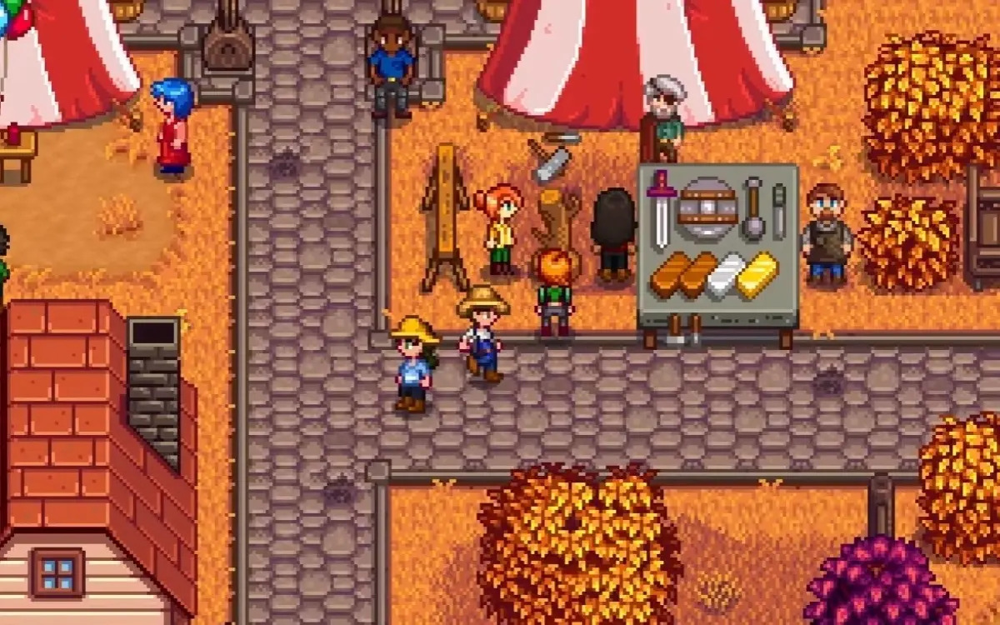
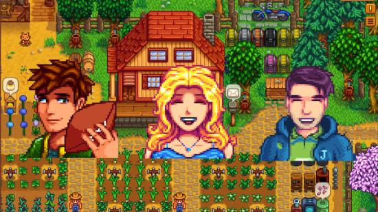

Explicando Stardew Valley
Bem-vindo ao mundo de Stardew Valley! Um jogo onde você sai da cidade grande para morar numa vila com o objetivo de criar e crescer a sua fazendinha.

Stardew Valley é um jogo de RPG de simulação desenvolvido por Eric "ConcernedApe" Barone, desenvolvedor, designer de jogos, artista, compositor e músico americano.
Lançado em 2016, o jogo te coloca no lugar de um personagem que herda a velha fazenda de seu falecido avô em um lugar conhecido como Stardew Valley.
Além de cuidar dos animais e das plantações, o jogador também poderá explorar a cidade, participar de eventos sazonais e interagir com diferentes NPCs.
Por conta de sua qualidade e pela quantidade de conteúdo, o jogo se tornou um sucesso, com mais de 41 milhões de cópias vendidas e ficando no top 30 dos jogos mais jogados da Steam até o momento.
Por que um jogo de fazendinha ficou tão famoso?
- Game Design: Muitos são os elogios voltados para o estilo de arte do jogo, contendo uma pixel art colorida e agradável aos olhos.
- Narrativa: O jogo contém uma narrativa simples, mas divertida que entretem os jogadores, que passam a ter mais interesse pelos personagens.
- Personagens diversos: Somando com a narrativa, o jogo conta com personagens de diferentes personalidades, contendo qualidades e defeitos que os tornam únicos em seu jeito de ser.
- Incentivo ao gerenciamento: O jogador pode gerenciar o tempo, a energia e os recursos do seu personagem para administrar plantações e criar animais, dando um senso de responsabilidade com sua fazenda.
- Mecânicas diversas: O jogodor também pode pescar, minerar, coletar suprimentos, fazer missões da comunidade da vila além de administrar os próprios gastos.
- Soundtrack relaxante: E para finalizar jogo também é conhecido por ser relaxante principalmente graças as suas músicas que alternam para diferentes ambientes e situações.

Para os interessados, aqui contém uma tabela com os requisitos mínimos para rodar o jogo no PC:
Requisitos Mínimos para Stardew Valley
| Requisito |
Especificação |
| SO |
Windows Vista ou superior |
| Processador |
2 GHz ou superior |
| Memória RAM |
2 GB ou superior |
| Placa de vídeo |
N256 MB de memória de vídeo, Shader Model 3.0+ ou superior |
| DirectX |
Versão 10 ou superior |
| Armazenamento |
500 MB de espaço disponível |
| Outro motivo do sucesso: O jogo é extremamente podendo rodar em qualquer máquina. |
Vale ressaltar que o jogo também está disponível para consoles e celulares!
Curiosidades sobre Stardew Valley
- O jogo foi criado por uma única pessoa, que no caso seria o Eric "ConcernedApe" Barone. Na época ele estava tendo dificuldade de conseguir emprego após se formar em uma faculdade de TI.
- O jogo contém inspiração do Studio Ghibli, onde os pequenos Espíritos da Poeira nas minas lembram os seres de carvão do filme A Viagem de Chihiro.
- O criador já relatou em uma transmissão que existe um segredo no código antigo do jogo que ele duvida que alguém vá descobrir.
- Os NPCs contém uma rotina própria, que varia dependendo das estações do ano, podendo passear pela cidade, ir no bar, no mercado ou ir ao médico.

Mas isso é apénas a pontinha do jogo, ainda tem muito mais o que explorar que não vai caber em um só trabalho!
Por isso encerramos por aqui, mas esperamos que esse conteúdo tenha te entretido e atiçado a sua curiosidade!
Essa é uma página simples que criamos para falar um pouco sobre o jogo: Stardew Valley.
Esperamos que você tenha gostado do conteúdo e que ele tenha sido útil para você. Se você tiver alguma dúvida ou sugestão, não hesite em entrar em contato comigo.
Caso queira saber mais sobre o jogo de fazendinha preferido dos jogadores, clique aqui para acessar uma página da Wiki que explica tudo sobre o jogo de forma detalhada.